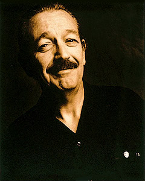
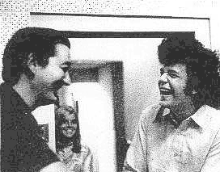
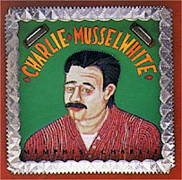
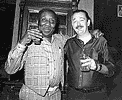

 |
Charlie MUSSELWHITE
(31 января 1944, Косцюшко, Миссиссиппи)
Чарли МАССЕЛУАЙТ - Американский исполнитель на губной гармонике,
певец, гитарист.
Разносторонний и виртуозный музыкант; был среди пионеров блюз-роковой волны 60-х,
в 90-х стал одним из лидеров в искусстве игры на губной гармонике,
сочетая в своей музыке традиции с современным звучанием;
неоднократный лауреат премии им.В.К.Хэнди.
|
 Частично индеец чок-тау; родился в Миссиссиппи, но рос в Мемфисе.
С детства увлекался блюзом,
познакомился с участниками легендарного в блюзе ансамбля
"Memphis Jug Band",
был принят в круг блюзовых музыкантов города, в котором был первым и долгое время единственным белым.
В 1962г. переехал в Чикаго, "блюзовую столицу". С гитарой и губной гармоникой выступал на улицах,
прежде чем получил возможность выступать в тех же клубах, где тогда выступали
отцы-основатели чикагского блюза: Мадди Уотерс (Muddy Waters),
Хаулин Вулф (Howlin Wolf) и др.
Записанный в 1966г. для фирмы "Вангард"
дебютный альбом Чарли Масселуайта считается классическим образцом чикагского блюза периода становления
белой блюз-роковой волны.
Вместе с Полом Баттерфилдом (Paul Butterfield)
Чарли Масселуайт почитается как первопроходец
чикагского белого блюз-рока. Он продолжает активно выступать и много записывается; опыт,
приобретенный за годы на блюзовой сцене, значительно расширил его исполнительский и стилевой арсенал.
В 90-х принимал участие в записи альбомов Джона Ли Хукера
(John Lee Hooker);
пропагандирует другие стиля
американской музыки с африканскими корнями, например, салсу;
пробует свои силы в джазе. Вместе со старым другом гиатристом Джоном Хэммондом (John Hammond)
принял участие в записи альбома Тома Уэйтса (Tom Waits) 1999 года. В 90-х начинает выступать соло как певец-гитарист,
исполняя собственные песни в глубоко традиционной манере.
ВЭБ™'99
Записи Чарли Масселуайта в RealAudio
- 1990г.: Leaving Your Town (414k)
- 1993г.: Bedside Of A Neighbor (284k) - вместе с вокальным ансамблем
"Blind Boys Of Alabama".
- 1995г.: Blues Overtook Me (265k) - для любителей редкостей:
Чарли Масселуайт участвует в концерте "John Lee Hooker & Friends" в калифорнийском "House Of Blues".

Дискография
- Stand Back! Here Comes Charley Musselwhite's South Side Band(Vanguard LP, 1967)
- Stone Blues (Vanguard LP, 1968)
- Louisiana Fog (Cherry Red LP, 1968)
- Tennessee Woman (Vanguard LP, 1969)
- Memphis, Tennessee (Paramount/Crosscut/Mobile Fidelity/MCA LP, 1970)
- Memphis Charlie (Arhoolie LP, 1971)
- Takin' My Time (Arhoolie)
- Goin' Back Down South (Arhoolie)
- Leave The Blues To Us (Capitol)
- Times Getting Tougher Than Tough (Blind Pig)
- Harmonica According To Charlie Musselwhite (Kicking Mule Records LP, 1978)
- with The Dynatones - Curtain Call Cocktails (War Bride LP, 1982)
- Mellow Dee (Crosscut LP, 1986)
- Ace Of Harps (Alligator CD, 1990)
- Tell Me Where All The Good Times Have Gone (Blue Rock It CD, 1992)
- Cambridge Blues (Blue Horizon)
- Ace Of Harps (Alligator CD, 1990)
- Signature (Alligator CD, 1991)
- In My Time (Alligator CD, 1993)
- The Blues Never Die (Compilation) (Vanguard CD, 1994)
- Harmonica According To Musselwhite (Blind Pig CD-Reissue, 1994)
- Nothin' But The Blues - Louisiana Fog Reissue (Delta Music Inc CD, 1995)
- Rough News (Virgin/Pointblank СD, 1997)
- Continental Drifter (Pointblank СD, 1999)
Книга уроков игры на губной гармоники Power Blues Harp,
выпущенная в 1990г., включает в себя, кроме коротких примеров,
18 музыкальных треков.
В сети:
- Именной сайт
www.charlie-musselwhite.com
с полной дискографией, биографией, wav-образцами и самое интересное - возможностью задать вопрос ему самому
(от как поживаете? до нюансов игры на губной гармонике, например).
Есть еще сборник мудрых мыслей, помогающих по жизни. Вот три примера:
1. Твердое решение придет тогда, когда вам надоест думать;
2. Опыт - это то, чего у вас не будет до тех пор, пока вы уже не сможете им воспользоваться;
3. Женщины, требующие равных прав с мужчинами, не многого хотят от жизни.

Фотоальбом порадует любителя блюза. Поскольку Масселуайт не столько собой любуется,
сколько гордится своими друзьями, его фотоальбом - это иллюстрированная история и "кто есть кто"
блюза за последние 30 лет: какие люди, какие встречи! Но, может быть, всего круче
фотография дерева на краю хлопкового поля, у которого Санни Бой встретил девочку-героиню песни
"Good Morning Little Schoolgirl" ("Доброе утро, маленькая школьница").
Так что "Да, заходи, все равно день уже испорчен" - как говаривает старина Чарли.
- Тексты
по традиции предлагаем поискать у Гарри на http://blueslyrics.tripod.com/.
Однако, при всем огромном уважении к этому обширному собранию блюзовых текстов,
на этот раз произошла какая-то очевидная путанница. Кажется, нет ни одного
блюза сочинения самого Масселвайта, да и вообще все авторство перепутано:
от общеизвестного HELP ME Санни Боя Уилльямсона, до малоизвестного .39Special,
который сочинил Карей Белл, что честно указывает сам Масслеуайт в буклете
к своему альбому. Тем не менее, есть тексты к некоторым песням, которые Масселуайт
записывал в период с 1967го по 1978 годы.
|
{kind=link}